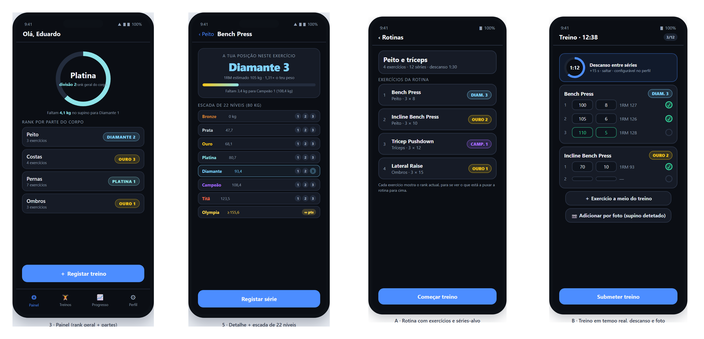

A GymRank é uma app iOS para treinar no ginásio com ranks de videojogo: Bronze Prata Ouro Platina Diamante Campeão Titã Olympia. O treino organiza-se em rotinas — conjuntos de exercícios com séries e repetições-alvo — que se iniciam e acompanham em tempo real, série a série. Cada exercício, cada parte do corpo e o corpo inteiro têm um rank relativo ao peso, com 1RM estimado ao vivo e o próximo objectivo em kg, o que responde à perda de aderência das apps de registo. A app pede obrigatoriamente idade e peso no arranque: definem a população de comparação e o ajuste dos limites.
Nativo em iOS (Swift/SwiftUI), plataforma diferente da do projecto de grupo (Android/Kotlin+Compose), como o enunciado exige. SwiftUI para a interface declarativa, SwiftData para persistência local (perfil, catálogo, rotinas, sessões) e motor de ranks isolado e testável. O catálogo é fechado: só entram os 23 exercícios com limiares de força publicados, para que nenhum exercício fique sem rank — não há dependência de uma API de exercícios e a app funciona offline. A identificação de máquinas por fotografia usa o classificador de imagens do sistema (Vision, VNClassifyImageRequest), que corre no dispositivo sem modelo treinado. Verificação por XCTest e XCUITest num simulador de iPhone por CI macOS, porque o desenvolvimento é em Windows.
NavigationStack: consulta (1–5) e treino (6–10), que grava cada série e devolve o rank actualizado.| Prior. | Funcionalidades |
|---|---|
| P0 | Perfil (idade, peso e descanso padrão) · catálogo incluído de 23 exercícios, todos com rank · rotinas com exercícios, séries e repetições-alvo (CRUD) · treino em tempo real com peso e repetições por série, 1RM ao vivo, adicionar exercícios a meio e submeter · descanso configurável · rank por exercício, parte e geral. |
| P1 | Exercício por fotografia da máquina, com sugestão a confirmar · histórico com volume e duração · gráficos · percentil · acessibilidade · exportação CSV/JSON e cartão partilhável (P2). |
Rotina. Guarda nome e uma lista ordenada de exercícios, cada um com séries, repetições-alvo e descanso. Ao tocar em Começar treino a app cria uma sessão com uma linha por série-alvo, já no modelo persistente: o ecrã de treino edita essas linhas directamente, por isso o valor fica gravado à medida que é escrito, mesmo que a app seja fechada a meio.
Durante o treino. Cada série tem peso e repetições; ao marcá-la como concluída o 1RM é recalculado e arranca o descanso (30–180 s, com +15 s e saltar). + Exercício abre o catálogo e acrescenta séries sem perder o registado; Submeter converte as séries em registos e recalcula os três ranks. Na foto, o classificador do sistema devolve etiquetas (barbell, lat pulldown) que são mapeadas para o catálogo em até três sugestões a confirmar; a câmara só existe em dispositivo real, no simulador usa-se a fototeca com o mesmo código.
| Fonte | Uso |
|---|---|
| Strength Level | Única fonte de exercícios e limiares: 23 exercícios com limiares publicados por sexo e peso, empacotados na app (sem pedidos em execução). Edição 2026: 287 exercícios, 195,5 M levantamentos de 27,9 M utilizadores. |
| Vision (iOS) | Classificação de imagens no dispositivo para identificar a máquina; sem chave e sem enviar fotografias para fora. |

Um rank é a posição do atleta entre quem tem o mesmo peso corporal, não um número absoluto. Os cinco limiares publicados valem ser mais forte que 5 / 20 / 50 / 80 / 95%; a app mantém-nos, acrescenta dois pontos médios para obter os oito ranks e divide cada um dos sete primeiros em três divisões iguais (Bronze 1 a Titã 3 = 21 níveis, mais o Olympia).
| Rank | Percentil | Origem |
|---|---|---|
| Bronze | < 5% | abaixo de Beginner, em três partes |
| Prata | 5% | Beginner |
| Ouro | 20% | Novice |
| Platina | 35% | média Novice/Intermediate |
| Diamante | 50% | Intermediate |
| Campeão | 65% | média Intermediate/Advanced |
| Titã | 80% | Advanced |
| Olympia | 95% | Elite, nível único |
Cada nível vale um inteiro (Bronze 1 = 0 … Titã 3 = 20) mais a fracção dentro da divisão: 0 a 21. O Olympia não tem tecto — 1000 pontos à entrada e +1000 por cada duplicação do 1RM. Os limiares escalam com o peso (limiar_ref × (peso/72)^b, 68 kg nas mulheres) e com a idade (0,95 · 1,00 · 0,95 · 0,88 · 0,78 · 0,65 nos seis escalões). O rank do exercício é o da melhor série (Epley), o da parte é a média dos seus exercícios e o geral a média das partes.
Exemplo (homem, 80 kg, 24 anos, supino): limites 47,7 · 68,1 · 80,7 · 93,4 · 108,4 · 123,5 · 155,6 kg — Diamante são três faixas de 5 kg, logo 105 kg é Diamante 3; 155,6 kg abre o Olympia.
22–31 Out: projecto SwiftUI, SwiftData e perfil. 1–14 Nov: catálogo, navegação e ranks por exercício. 15–30 Nov: rotinas, treino em tempo real, descanso e submeter, com CRUD completo. 1–8 Dez: detecção por fotografia (Vision), histórico, gráficos, acessibilidade e testes. 9–10 Dez: submissão (código, README, slides, vídeo de 2–3 min). Verificação: testes do motor, do temporizador e das etiquetas, XCUITest dos fluxos, em CI macOS. Critérios: funcionalidade 30%, UI/UX 20%, código 20%, inovação 15%, documentação 15%.
Referências: Strength Level, Strength Standards 2026 (strengthlevel.com) · Apple, SwiftUI / SwiftData / Vision / XCTest (2026) · Epley, B. (1985), Poundage Chart. — GymRank · Eduardo Gomes, 2026165029 · DDM/MEI, ESTG/IPLeiria · 21/10/2026